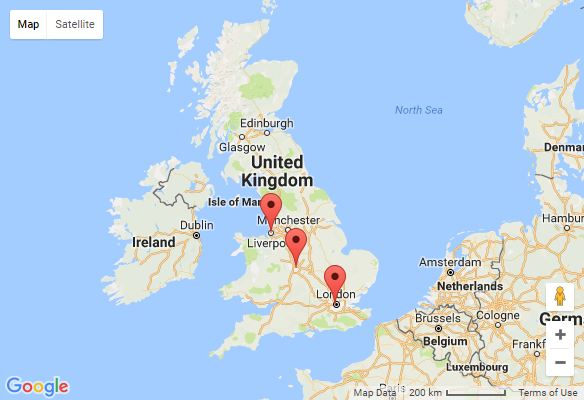
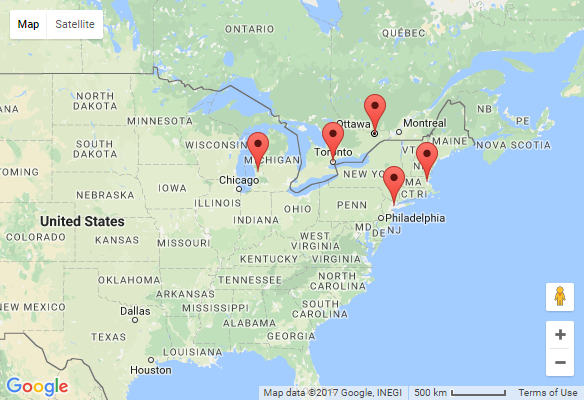

Displaying dynamic maps
Kentico offers two ways of displaying dynamic maps on a page:
Page-related maps - display geographical locations based on the properties of specified pages. You can display multiple locations at the same time.
Data source maps - displays geographical location based on a data source web part. For example, a pages data source, query data source, xml data source web part or others. You can display multiple locations at the same time.
Either of these can use the Google maps or Bing maps service.
Page-related maps
Page-related maps allow you to display multiple predefined places on a map. The places that the map displays are loaded from pages that you specify. The usual example is a list of pages, each representing a different company office. By default, the CMS.Office page type can be used for this purpose, but any page type with fields specifying a geographical location will do. The web part (Google maps web part or Bing maps web part) then loads the geographical coordinates off of these pages and displays them on the map.
The process consists of two steps:
Pages from which you can display data on a map
The pages from which you can display data on a map need to have fields that represent a geographical location. These pages need to have either of these:
Two fields representing latitude and longitude.
—OR—A field or multiple fields representing an address in a human-readable form.
You can use the predefined CMS.Office page type to load data onto a map. You can also use the page type as a reference when creating your own page types.
Placing a page-related map on a page
In the Pages application, navigate to the page on which you want to display the map.
Switch to the Design tab.
Place the Google maps or the Bing maps web part on the page. The web part properties dialog opens.
Specify the Path to the pages from which you want the map to load data.
Select the Page types that you want the map to load. For example, CMS.Office.
-
—OR—
Fill in either the Default location or address or the DefaultLatitude and DefaultLongitude fields. These fields represent the map's initial view location.
Specify the rest of the web part properties, especially in the Transformation, Content, and Map properties categories. Hover over a property to see its description.
Click OK.
The page now displays a map with markers at the locations retrieved from the page fields you specified. For example:

Google maps web part displaying specified locations
Data source maps
Data source maps allow you to display multiple places on a map. The places that the map displays are loaded from a predefined data source web part. The usual example is a Page data source web part, which the map uses to load data from a list of pages. Each of the pages can represent a different company office, for example. By default, the CMS.Office page type can be used for this purpose, but any page type with fields specifying a geographical location will do. The web part (Basic Google maps web part or Basic Bing maps web part) then loads the geographical coordinates from these pages and displays them on the map.
The described process uses the Page data source web part.
The process consists of the following:
Pages from which you can display data on a map
The pages from which you can display data on a map need to have fields that represent a geographical location. These pages need to have either of these:
Two fields representing latitude and longitude.
—OR—A field or multiple fields representing an address in a human readable form.
You can use the predefined CMS.Office page type to load data from onto a map. You can also use the page type as a reference when creating your own page types.
Placing a page data source
In the Pages application, navigate to the page on which you want to display the map.
Switch to the Design tab.
Place the Pages data source web part on the page. The web part properties dialog opens.
Specify the Path to the pages from which you want the map to load data.
Select the Page types that you want the map to load. For example, CMS.Office.
Click OK.
You can now connect the data source to a map web part.
Placing a data source map on a page
In the Pages application, navigate to the page on which you want to display the map.
Switch to the Design tab.
Place the Basic Google maps or the Basic Bing maps web part on the page. The web part properties dialog opens.
Enter the Data source name.
-
—OR—
Fill in either the Default location or address or the DefaultLatitude and DefaultLongitude fields. These fields represent the map's initial view location.
Specify the rest of the web part properties, especially in the Transformation, Content, and Map properties categories. Hover over a property to see its description.
Click OK.
The page now displays a map with markers at the locations retrieved from the pages you specified in the Page data source web part. For example:

Basic Google maps web part displaying locations loaded from a connected Page data source